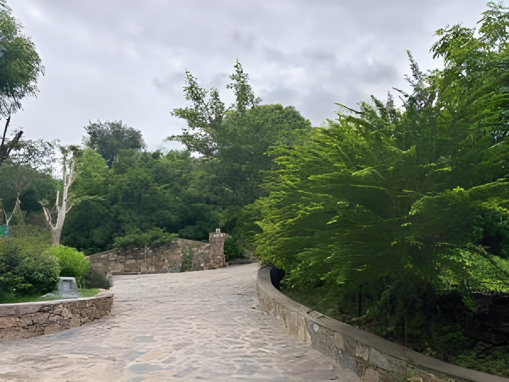
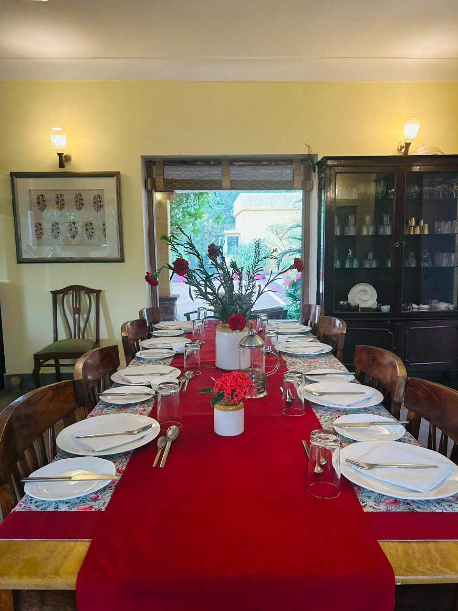
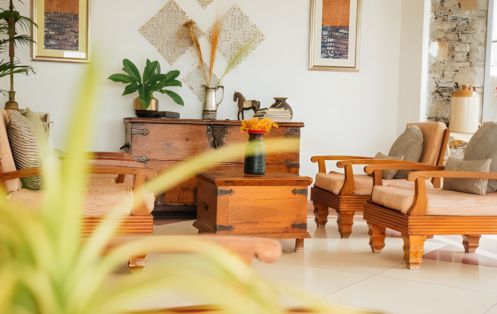
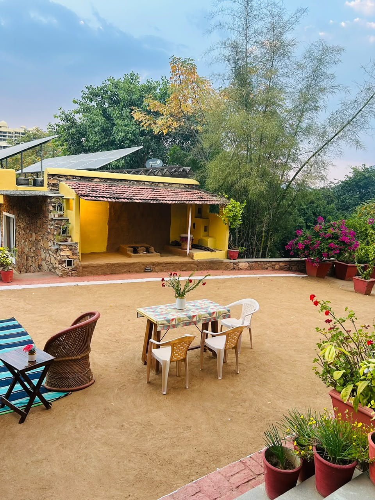
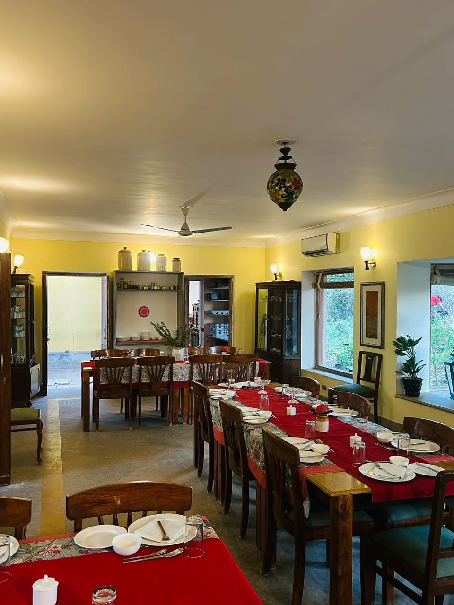
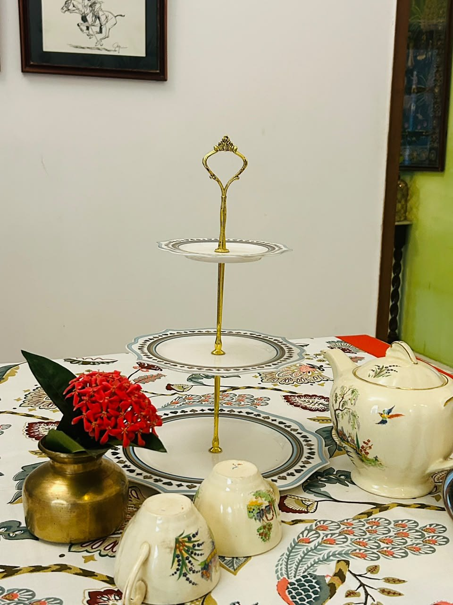

The estate
Five green acres on a hillock
Farmland all around, with views of the Aravalli hills, Sajjan Garh fort and an 800-year-old temple.
Explore the stay →
A boutique homestay
Built with passion & nurtured by nature.
Stories
Tap a circle to watch
About Devra Udaipur
A boutique homestay on a five-acre green estate, 10–15 minutes from Udaipur city centre. Eight rooms, home-cooked food and the Aravalli hills all around.
Devra Udaipur

The estate
Farmland all around, with views of the Aravalli hills, Sajjan Garh fort and an 800-year-old temple.
Explore the stay →
Location
Close to the lakes, palaces and markets, away from the city noise. Airport and station pickup on prior booking.
Explore Udaipur →
Dine with us
Traditional Rajasthani and North Indian meals, cooked with vegetables from our own farm.
Food & experiences →
Traditional touch
Curated furniture, block-printed linen and original art in every room and lounge.
About Devra →
Nature all around
Five green acres, the Aravalli hills on the horizon and the city line of Udaipur in the distance.
The stay
8 rooms, courtyards, lounges and an infinity pool.
Rooms
6 double-bed and 2 twin-bed rooms, some with a bay-window day bed.
See the rooms →
Leisure & lounges
Lounges open on three sides, courtyards with lily ponds and quiet corners to read, paint or rest.
See the lounges →
Courtyards
Quiet courtyards and garden corners on every level.
Explore the estate →Perfect for
Safe for solo women travellers, easy with pets, and quiet enough to work from.
Plan your stay →

Dining experience
Farm to plate, supervised by Jyoti
Home-cooked in traditional Rajasthani style, and made to your taste.
Facilities & amenities
Everything you need, on a quiet green hillock.
On request
Local attractions
Take the sunset boat ride, the one thing not to miss in Udaipur.
On the bank of Lake Pichola, known for its massive courtyards and elaborate paintings.
One of the city's temples, alongside Srinathji and Karni Mata.
A 36 km fort wall, the longest in India, plus a wildlife sanctuary. A favourite with trekkers.
Guest reviews
Rated 4.6 out of 5 on TripAdvisor, from 352 guest reviews.
“Romantic Udaipur”TripAdvisor · Oct 2026
“Beautiful homestay in Udaipur”TripAdvisor · Nov 2025
“Everything we could have wished for and more”TripAdvisor · Nov 2022
Blog

From the garden to the rooms, the lounges and the kitchen: a walk through Devra in pictures.
Read the story →Birdsong, warm light and a walk through the farms: how a typical day begins on the hillock.
Read the story →
Organic vegetables from our own fields, spices processed on the property and recipes Jyoti grew up with.
Read the story →Follow along
Book your stay
8 rooms, home-cooked food and the Aravalli hills all around.